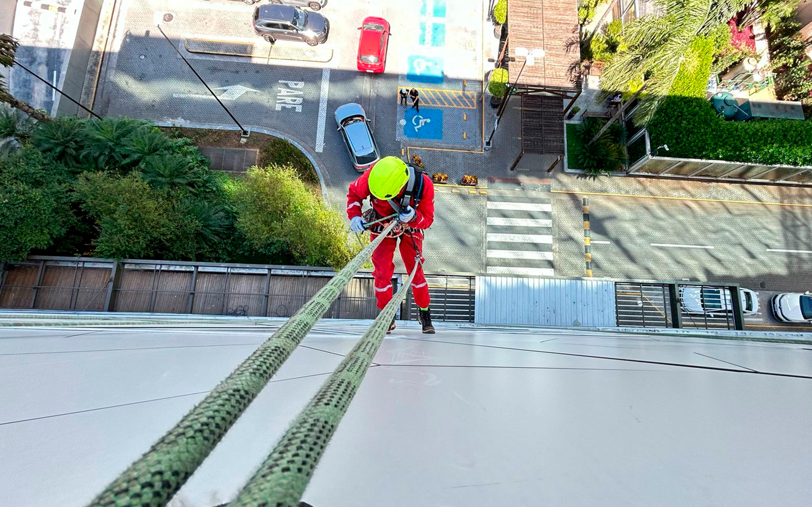

A Evolution Alpinismo Industrial oferece soluções inovadoras para manutenção, limpeza e inspeção em altura, com total foco em segurança e eficiência.
Conheça os benefícios de optar por soluções inovadoras em altura.

O alpinismo industrial em São Paulo representa uma revolução nos trabalhos em altura, oferecendo uma série de vantagens significativas em comparação com os métodos tradicionais, como o uso de andaimes. Esta técnica inovadora não apenas otimiza a execução de serviços, mas também eleva os padrões de segurança e eficiência. Confira os principais benefícios de optar pelo alpinismo industrial com a Evolution:
Utilizando equipamentos modernos e certificados, e seguindo rigorosamente as normas de segurança (NR-35, IRATA, ABNT), o alpinismo industrial minimiza riscos de acidentes, garantindo a integridade tanto dos profissionais quanto das estruturas atendidas em São Paulo. Nossos alpinistas industriais são altamente treinados para operar em ambientes complexos com máxima segurança.
A eliminação da necessidade de estruturas temporárias, como andaimes, reduz significativamente os custos operacionais, o tempo de execução dos serviços e os gastos com logística. Isso se traduz em uma solução mais econômica e eficiente para sua empresa em São Paulo, sem comprometer a qualidade ou a segurança.
Com mobilidade superior, o alpinismo industrial permite a realização rápida dos serviços em locais de difícil acesso, sem a necessidade de grandes montagens ou interdições. Isso garante uma resposta ágil às demandas emergenciais e uma maior flexibilidade operacional para projetos em São Paulo.
Ao executar os serviços com discrição e sem interromper as atividades da empresa, o alpinismo industrial contribui para a continuidade operacional e minimiza perdas de produtividade. Isso é crucial para edifícios comerciais e indústrias em São Paulo, onde o tempo de inatividade pode gerar grandes prejuízos.
Alcança áreas de difícil acesso sem a necessidade de estruturas pesadas.
Realiza os serviços sem interferir nas rotinas e operações diárias da sua empresa.
Metodologia que garante a conclusão dos serviços de forma eficiente e no menor tempo possível.
Profissionais treinados e certificados garantem a execução com máxima qualidade.
Ao optar pelo alpinismo industrial com a Evolution em São Paulo, sua empresa investe em tecnologia, segurança e sustentabilidade, proporcionando serviços de alta qualidade e significativa redução de custos operacionais. Nossas soluções são ideais para quem busca eficiência e inovação em trabalhos em altura.
Além dos pontos destacados, o uso dessa técnica promove uma execução sustentável dos serviços de alpinismo industrial, contribuindo para a preservação ambiental e a eficiência operacional em São Paulo.
Soluções seguras e inovadoras para serviços em altura.
Entre em ContatoEncontre respostas para as perguntas mais frequentes sobre os benefícios e diferenciais do alpinismo industrial.